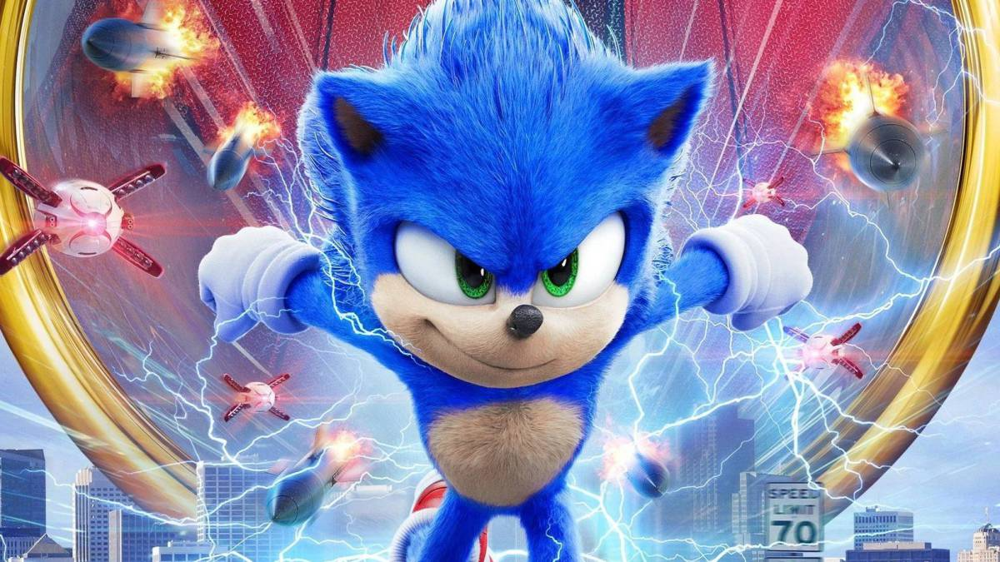

SONIC THE HEDGEHOG
Sonic the Hedgehog (ソニック・ザ・ヘッジホッグ Sonikku za Hejjihoggu?, lit. "Sonic el Erizo"; nacido el 23 de junio), es el protagonista principal de la saga de videojuegos del mismo nombre y la mascota de Sega. Él es un erizo antropomórfico nacido con la habilidad de correr más rápido que el sonido, de allí su nombre. Su mejor amigo es Tails Desde que entró en la batalla contra la injusticia, Sonic ha sido el vencedor de la paz y es reconocido en la Tierra por haberlo salvado incontables veces. Durante sus muchas aventuras, Sonic ha viajado desde los confines del mundo hasta los confines del espacio y del tiempo, enfrentando innumerables pruebas que lo han probado al máximo, ganándose muchos títulos, aliados y el desprecio de varios enemigos. Conocido por su legendaria actitud arrogante, tranquila y un temperamento algo corto, pero con un fuerte sentido de la justicia, la compasión y el amor por la libertad y la aventura, Sonic utiliza sus habilidades para proteger a los inocentes de su mundo y del más allá de las fuerzas del mal, especialmente de su archienemigo, el Dr. Eggman, y su imperio.


Sonic se describe por ser "igual al viento"; una persona relajada, con espíritu libre y aventurero. Él considera a la libertad como parte de todo, viviendo su vida a su manera sin obedecer los estándares que se le presenten y lo que más disfruta es viajar por el mundo, nunca pensando dos veces lo que la gente le dice o piensa. Endurecido con una fuerte pasión por la vida, él siempre anda buscando nuevas experiencias, haciendo de su vida un sin fin de aventuras. Debido a su necesidad por ser libre, a Sonic le desagrada estar encerrado sin poder moverse, como en Sonic Adventure 2 donde no podía mantenerse calmado mientras estaba encerrado en una pequeña prisión. De la misma forma, tiende a ser demasiado inquieto y detesta esperar demasiado, detalle que es representado en sus animaciones idle. Por lo general Sonic suele tener una actitud tranquila y relajada.Aunque en ocasiones suele ser impaciente y posee un corto temperamento. Debido a su naturaleza impulsiva, Sonic detesta estar aburrido, llega a ser imprudente y actuar antes de pensar, metiéndose en problemas por accidente. A pesar de eso, él es honesto y siempre cumple sus promesas.
La personalidad de Sonic es una combinación entre amabilidad y ferocidad. Él es extremadamente benevolente y firme acerca de la libertad, pero él nunca es el único en descansar en la cara de la injusticia y la opresión. Él odia toda clase de maldad,llegando a ponerse muy enojado y hará todo lo posible para acabar con ella, incluso si esto significa sacrificar su propia vida para lograrlo.Sin embargo, él usualmente mira sus heroísmos como una oportunidad para divertirse, haciéndolo de él un "busca-emociones". En tiempos de crisis, su personalidad tranquila suele cambiar a una muy agresiva y cuando se enfrenta contra algo o alguien, se concentra intensamente en eso hasta derrotarlo.Además, Sonic tiene un gran y bondadoso corazón, lo que hace que él siempre esté ayudando a sus amigos cuando se ven metidos en problemas, incluso sabiendo que su interferencia provocaría más problemas. Sonic tiene mucha confianza de sí mismo y posee un largo ego que lo marca, haciendo de él alguien atrevido, orgulloso y confiado de sus habilidades. No importa que tan grande sea el desafío, siempre se mantiene calmado.Él a menudo bromea de la forma de ser de los demás para encenderles su estado de ánimo, aunque esto lo hace más que todo para burlarse de sus oponentes. A pesar de eso, él cuando quiere puede ser también algo caballeroso y modesto. Siguiendo su naturaleza de libertad, Sonic jamás permite que las cosas malas o dolorosas que le han pasado antes lo afecten o lo detengan. En vez de eso, prefiere vivir el presente y siempre buscar una nueva aventura. Sonic también es increíblemente fuerte en lo que es voluntad: no importa la situación, él nunca se rendirá antes que el día sea salvado. Sonic es extremadamente leal a sus amigos y arriesgará su vida por ellos sin dudarlo. Aunque en ocasiones suele reírse de ellos y les gasta bromas, Sonic nunca lo hace con la intención de lastimarlos o hacerlos sentir mal. Sonic siempre esta complaciente de ayudar a sus amigos y siempre les muestra que pueden confiar en él. Sin importar la cantidad de oponentes que tiene, Sonic suele admirarlos por lo fuertes que son y por darle mucha diversión, como el Dr. Eggman. Del mismo modo, Sonic es reconocido por tener una remarcable capacidad por olvidar lo que los otros le hicieron antes, como cuando olvidó las dos veces que Silver trató de matarlo y más adelante comenzó a trabajar con él sin ningún rencor. A pesar de su conducta extrema, él es muy perspicaz de lo que él usualmente es, siendo capaz de hacer cambiar la forma de ser y de pensar de las personas que conoce, como sucedió con Elise, Merlina y Blaze. Este detalle, junto a su carismática personalidad, hacen que Sonic sea una persona que se lleva muy bien con los demás, incluso con sus enemigos.
Apariciones en los juegos: